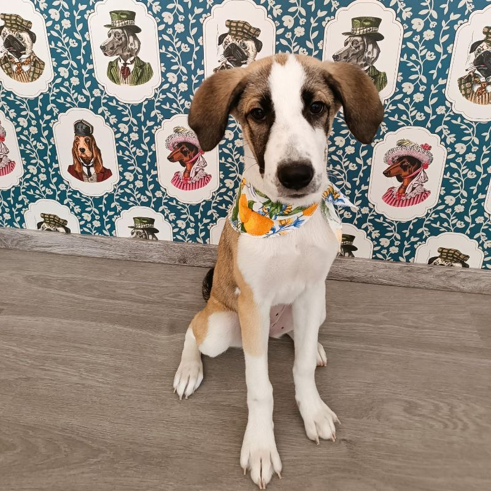
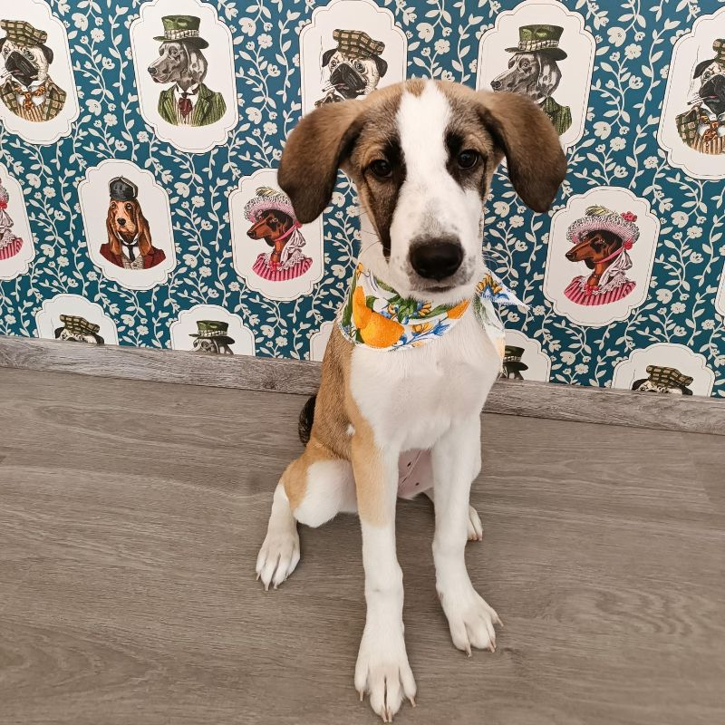

Συχνές Ερωτήσεις
Πόσο κοστίζει ένα grooming;
Ανάλογα με τη ράτσα, την κατάσταση και τις ανάγκες του σκύλου.
Πόσο συχνά πρέπει να καλλωπίζεται ένας σκύλος;
Αναλόγως τη ράτσα και τον τρόπο ζωής, συνήθως κάθε μήνα.
Χρειάζομαι ραντεβού;
Ναι, χρειάζεται ραντεβού ώστε να εξυπηρετηθείς άμεσα και σωστά.
Τι προϊόντα χρησιμοποιείτε;
Χρησιμοποιούμε μόνο επαγγελματικά, δερματολογικά ελεγμένα προϊόντα.
Πόσο διαρκεί η περιποίηση;
Η διαδικασία διαρκεί από 1 έως 2 ώρες ανάλογα με το μέγεθος και την κατάσταση του σκύλου.
 
